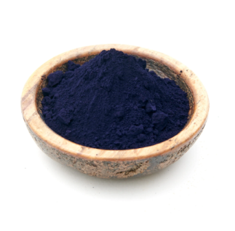
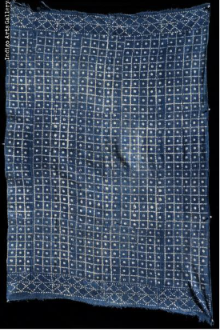

Chemical formula : C₁₆H₁₀N₂O₂
Density: 1.199 g/cm^3
Molar Mass / Volume Properties: 262.27 g/mol
Solubility: Essentially insoluble in water and common non-polar solvents like alcohol or ether; however, it is soluble in high-polarity or aggressive organic solvents such as chloroform, nitrobenzene, and concentrated sulfuric acid.
First Evidence: The oldest known fabric dyed with indigo was discovered at Huaca Prieta, Peru, dating back roughly 6,000 years.
Ancient Records: Archaeologists have found evidence of indigo in King Tut's embalming linen, as well as a Babylonian cuneiform tablet indicating the indigo dye process.
India and Indigo: As an indigenous plant deeply rooted in the soil of the subcontinent, indigo did not arrive in India from external lands; rather, the region serves as the historic cradle of its cultivation and processing. For thousands of years, the native plant Indigofera tinctoria thrived naturally across the Indus Valley and the Gangetic plains, allowing ancient Indian civilizations to pioneer the complex, multi-step biochemical extraction process required to transform green foliage into brilliant blue pigment. Archaeological discoveries at Mohenjo-daro confirm that local artisans had mastered the art of indigo dyeing by at least 2000 BCE, long before the commodity caught the attention of global superpowers. The dye became so tightly linked to its geographical origin that ancient Greco-Roman merchants named the substance Indikon, meaning "substance from India," which later evolved into the modern English word "indigo." Through ancient trade routes like the Silk Road, India supplied this highly coveted luxury good—often referred to as "blue gold"—to the royal courts of Egypt, Rome, and Greece, solidifying its position as the ancient world's premier exporter and the foundational epicenter of the global indigo trade.
African dyed indigo cloth: This specific vintage piece is a "Cowrie Shell" pattern stencil-resist-dyed cotton cloth originating from the Mossi people of Burkina Faso in West Africa. It is painstakingly crafted from sixteen narrow, handwoven cotton strips stitched together to create a single textile canvas. The intricate geometric pattern—featuring uniform squares with central dots mimicking cowrie shells (historical symbols of wealth and currency in Africa)—is achieved by applying a resist technique before immersing the fabric into vats of natural dye derived from local Indigofera plants. This textile style represents an ancient, thriving West African cultural heritage where deep blue hues and meticulous hand-dyed patterns serve as symbols of status, prosperity, and storytelling across generations.


Indigo's use in today's world: Indigo remains a highly valued dye in the modern world, serving as the definitive backbone of the global denim and blue jeans industry. While the vast majority of today's indigo is synthetically produced to meet massive industrial demands, natural indigo is experiencing a significant revival among eco-conscious fashion brands, artisanal textile crafters, and organic farmers. Beyond its deep-rooted legacy in apparel, indigo chemistry finds unique applications in modern technology, including organic electronics, advanced medical diagnostics, and functional colorants. Click here to know more about the indigo dye !
Made with HTML and CSS